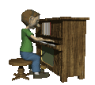

today i played this song with dr.chapman and i really like it
Talk - Sakuzyo 12/5/24
ive been listeing to this song for a while.. i love how calm it is and it makes me happy after long days
MagiCatz - Sakuzyo 12/5/24
i ant gonna lie this is one of my favorites. its a blend of all the different styles of music i like. it has a cool double time swing part some j pop chord progressions and this cool slow piano/orchestra part
Peppersteak - Alias Conrad Coldwood 12/8/24
i wouldnt really listen to this song a lot but it does sound really cool its mixed ina way where you cant really play it with actual instruments
Apparitions Stalk The Night - ZUN 12/8/24
i really like this song its really simple and short yet has a good melody all the way through it. i was really a fan of this zun guy in middle school he was peak in some of his early soundtracks
U.N. Owen Was Her?! - ZUN 12/8/24
this one was one of my favorites from zun it just sounds cool and i got into piano more because i watched this yt piano tutorial on this song
Bamboo Forest In Flames - ZUN 12/15/24
i remember this song was such a bop in my 8th and 7th grade days!! i dont even play the games made by this zun guy i just like the songs
Sonic The Hedgehog Starlight Zone - Masato Nakamura 12/30/24
This song came up in my mind all of the sudden.. when i first heard it i was playing a kaizo rom hack and i looked all over the place for the name of the song!! this song is so simple but the melody is so pretty...
Time Check - Buddy Rich Big Band 1/4/25
This song is another masterpiece from the buddy rich big band.. this guy makes the best double time swing big band stuff
OGENKI DE SKA - Akira Jimbo 1/4/25
Akira Jimbo might be a no name but this guy actually served with this song. i love the fusion ish part of this song and the vocals is the most beautiful thing ive heard in a while.
not much more to see now ill prolly update it later

main page